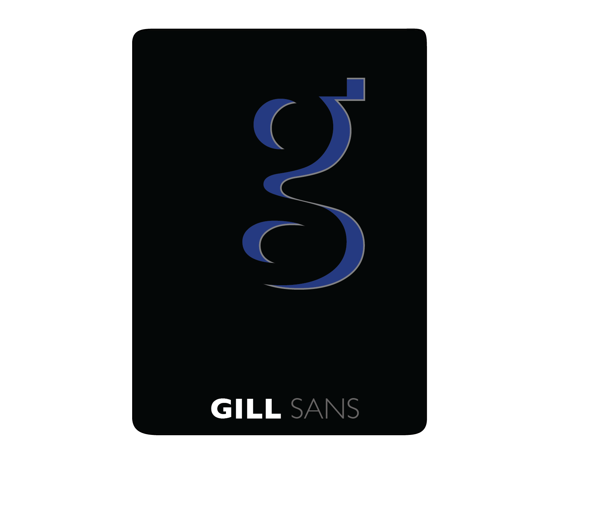

Design
Eric Zhu
Projects
University
About
Download my resume
CLOSE
Design
Scroll down to see my graphic design work.

UI Design
The example is the UI of Equator Music, a Youtube music player. I created the UI design using Sketch along the various states (showing playlists or songs) and icons for the project.
Logo Design
The example is the Equator Music logo. I generally design logos in Sketch, but have also designed various logos in Illustrator. Check out my other logos by checking out my other projects!

Misty Mountains
This was a school project that I created in Photoshop with a heavy use of blend modes. The criteria was to create an image that could go along with a haiku.
Playing Cards
This was a quick school project made in Illustrator with the concept of modern yet authentic "Gills Sans" playing cards in mind.


Typographic Puma
This was a school project made in Illustrator using words/letters to create an image of a puma.
Dandelion
This was a picture I retouched in Photoshop mainly using color curves.

CLOSE
Projects
Scroll down to see my projects.
ASA DataFest@UofT
My group of 4 created a Tableau dashboard that portrayed the Canadian consumer landscape through a basket of common consumer goods, inspired by CPI. Our analysis centered on careful descriptive analytics on manually cleaned data, filtered by exploratory data analysis. Our conclusion found that the prices of our basket of goods had been negatively affected by the pandemic, as shown by economic indicators.
Check out the finalized dashboard..

Equator Music
A simplistic Youtube music player created in Visual Studio and C# using the .NET framework along with the Youtube/Google API. I put a heavy emphasis on usability through the card design, along with attractiveness through various UI effects created in the pre fluent design era.
Check out the project..
Open Source Pause Menu
A robust open source pause menu for Unity3d that controls and saves relevant video and audio settings. It currently has over 6000 users and a 5 star rating on the asset store.
Check out the project page here.

uDocumentGenerator
A modern, light, and organized documentation generator. It was born out of the drawbacks I had while using Doxygen to create documentation for Open Source Pause Menu.
Check out the project..
CLOSE
First year
Statistics
STA130
An Introduction to Statistical Reasoning and Data Science: This course taught
the foundations of data science and statistical reasoning through "a combination of
logical thinking, mathematics, computer simulation, and oral and written discussion
and analysis". It ultimately covered traditional statistical methods along with
foundations of supervised learning and some models.
In every tutorial, we analysed a problem using statistical methods
and presented our conclusions to the class. A more detailed description is available
on the calendar (course
catalogue) or at the course website.
The course culminated in a group data analysis project that analysed global internet
usage with R on a multitude of factors, e.g,
region and socioeconomic status.
Check out the final project slideshow.
Theoretical Computer Science
CSC165
Mathematical Expression and Reasoning for Computer Science: This course was
an introduction to theoretical computer science with an emphasis on developing the
foundations of "abstraction and rigour". The course used proofs to develop "precise
expressions of mathematical ideas, including definitions and theorem" and mainly
applied them to the running times of iterative programs (Big-Oh, Big-Omega,
Big-Theta). A more detailed description is available
on the calendar (course
catalogue) or at the course website.
Check out problem set 4: our work or the handout (questions).
Programming Based
CSC148
Introduction to Computer Science: This course taught the much of the foundations of computer science using python. The main concepts covered were "Abstract data types and data structures for implementing them. Linked data structures. Encapsulation and information-hiding. Object-oriented programming. Specifications. Analyzing the efficiency of programs. Recursion." Our final project (assignment 2) was to create a recursive tree-based data structure that would represent music efficiently (and thus be able to play correctly formatted songs). The course website is no longer up, but here is the syllabus. More information about the course is also available on the calendar.
Mathematics
MAT137
Calculus! (Calculus with proofs): This course covered differential and integral calculus with an emphasis on proofs. Ultimately this course expected us to know how to the theoretical foundations of calculus concepts in conjunction with the computational methods. For example, it was expected of us to be able to use the formal definition of a certain series to prove its divergence. More information is available on the calendar (course catalogue) or find some of the course materials used in one section.
Second year
Statistics
STA247
Probability with Computer Applications: This course taught the foundations of probability through calculations and some proofs of core concepts. Notable concepts include: "random variables, discrete and continuous probability distributions, expectation and variance, independence, conditional probability". These concepts were applied to various common distributions not limited to the normal, exponential, poisson, and geometric distributions. More information is available on the calendar (course catalogue)
STA248
Statistics for Computer Scientists: This course covered inferential and
descriptive statistics from an applied and computational perspective. Assignments
heavily used R to perform data analysis using concepts such as hypothesis testing,
confidence intervals, regression and ANOVA. Proofs were sometimes used to reinforce
theoretical foundations. More information is
available on the calendar
(course catalogue)
Check out some questions that I did in R:
Theoretical Computer Science
CSC236
Introduction to the Theory of Computation: This course was a rigourous introduction to the Theory of Computation. It covered topic such as various forms of induction, running times of recursive algorithms, program correctness, and state machines (NFAs and DFAs) using formal languages. The course consisted of weekly quizzes, tests, and assignments that would consist of proof based questions. A more detailed description is available on the calendar (course catalogue) or at the course website.
Programming Based
CSC207
Software Design: This course was a project based course, covering software design concepts, namely SOLID design principles and design patterns noted by the Gang of Four. Practical experience of design patterns and SOLID design principles were reinforced by practical experience in using Android Studio to create a game in a group setting. Emphasis was placed on writing clean code for future extensibility. A more detailed description is available on the calendar (course catalogue).
CSC209
Software Tools and Systems Programming: This course covered programming in bash and C. Emphasis was placed on being able to utilize bash commands to efficiently assist in develop programs in C in addition to writing Bash programs. Assignments required C and Bash, and the final assignment focused on creating a twitter-like sever and client, with emphasis placed on correctly writing asynchronous and synchronous code. A more detailed description is available on the calendar (course catalogue).
Mathematics
MAT235
Calculus II: This course taught multivariate calculus, covering vector calculus, line integrals, and surface integrals in addition to differential and integral calculus of multiple variables. Additionally, emphasis was placed on applications from mainly physics and sometimes statistics. A more detailed description is available on the calendar (course catalogue).
MAT223
Linear Algebra I: This course covered core concepts in linear algebra, such as eigenvalues and eigenvectors, spans, linear dependence/independence, cross/dot products, and linear transformations. A more detailed description is available on the calendar (course catalogue).
Economics
ECO101
Principles of Microeconomics: This course taught the foundations of microeconomics. It covered core concepts such as pricing, externalities, taxes, introductory game theory, and monopolies. Emphasis was placed on developing intuition of market movements and the resulting prices. A more detailed description is available on the calendar (course catalogue).
ECO102
Principles of Macroeconomics: This course taught the foundations of
macroeconomics. It covered core concepts such as GDP, CPI, international trade,
tariffs/taxes, monetary supply, and PPP. Similar to ECO101, emphasis was placed on
developing intuition of market movements, but we used macroeconomic models in
determining the behaviour of markets and resulting prices.
A more detailed description is available on the calendar (course
catalogue).
Check out assignment 6 (completed using R/markdown): my
work
Third year - In progress (will be updated)
Statistics
STA302 STA1001
Methods of Data Analysis I
STA303 STA1002
Methods of Data Analysis II
STA365
Applied Bayesian Statistics
Machine Learning
CSC311
Introduction to Machine Learning
Theoretical Computer Science
CSC263
Data Structures and Analysis
Programming Based
CSC258
Computer Organization
CSC343
Introduction to Databases
Human Computer Interaction
CSC318
The Design of Interactive Computational Media
Economics
ECO200
Microeconomic Theory
CLOSE
About me.
I'm a student developer and designer double majoring in Computer Science/Statistics with
a minor in Economics at the University of Toronto, and originally from
Boston. My interests include machine learning, data science, UI/UX design, graphic design, and CG
graphics.
I love creating projects that further human computer interaction (HCI), whether that be presenting
data in insightful/easy to read conclusions or frameworks/apps that simplify life for the end user.
Besides computing, I love travelling, exploring, and taking pictures (check out my photography Instagram).
Download my resume.
© Eric Zhu 2020